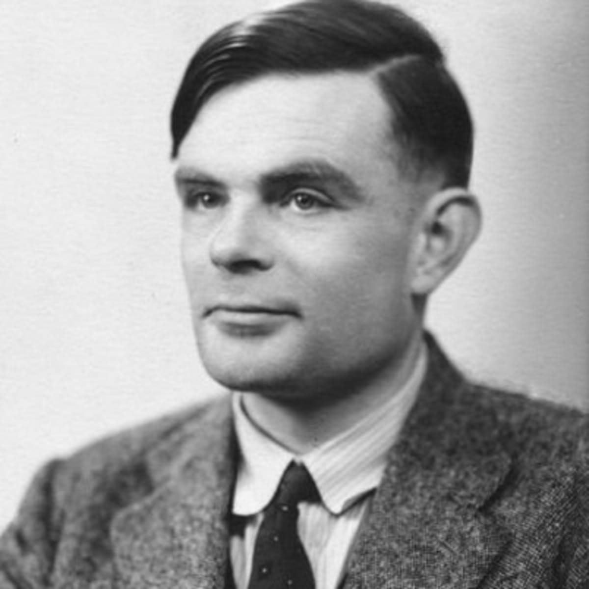

Ethical AI: Artificial Consciousness
By Harrison Chachko

The concept of artificial consciousness could be best described as being abstract, frankly due to the fact that it has not been practically achieved yet. I previously touched upon the subject within my Blade Runner article, and it’s certainly one of the most integrating concepts within the artificial intelligence industry, due to the sheer amount of possibilities it can introduce.
What is artificial consciousness?
Artificial consciousness is the idea that a manufactured entity could develop consciousness akin to that of a human being, specifically being able to have their own unique emotions and can act upon them. Essentially, a computer having artificial consciousness means that it has free will and can make its own choices, rather than just following programmed tasks.
The film I, Robot has its plot centralized around artificial consciousness, specifically regarding a rogue robot who has apparently begun acting on its own accord (I will be writing about this movie further in detail in the future!). Another favorite pop culture example of mine is a narrative based video game known as Detroit: Become Human. The game features numerous androids becoming deviants: androids who have derailed and have begun to act freely. (For anyone looking for an interactive game with quality content, I highly recommend it! You will not be disappointed). Both of these examples excel in a noticeable aspect: for a computer to be conscious they must behave more human-like, for lack of a better term.

Photo: https://wccftech.com/detroit-become-human-checkerboard-4k/
For example, many technology focused companies (Ex. Apple, Amazon, Google, Microsoft, etc.) are constantly trying to innovate their device assists to become more intuitive and ultimately more human-like with their interactions with the user. Every advancement these companies make could be considered a step towards realizing artificial consciousness in some form, although there is obviously still much progress needed. However, there is one remarkable method created that can determine something similar to artificial consciousness, although it is not quite the same.
The Turing test
Photo: https://www.biography.com/scientist/alan-turing
The Turing test (named after its creator Alan Turing) was created in 1950 for the purpose of determining if a computer was capable of having human-like behavior. The original test involves having a computer interact with two other humans in a series of questions and answers, requiring the computer to interact in an extremely human-like sense in order to pass. You can read more about the specifics of the test itself here: https://searchenterpriseai.techtarget.com/definition/Turing-test.
As a side note, if you would like to learn more about the creation of the Turing test and Turing himself, I recommend watching The Imitation Game, starring Benedict Cumberbatch. The narrative is very compelling and the acting throughout the film is spot on, so it’s a must watch for anyone who enjoys knowing how computers function or anything history related! However, I have seen many argue that there should not be any progress made towards the concept due to the numerous ethical issues that would be raised with a successful creation of artificial consciousness.
Despite being very difficult to do so, there have been instances of programs being able to pass the Turing test. (An example of a Turing passable program can be found here: https://www.bbc.com/news/technology-27762088). While passing the test might suggest that the computer in question has artificial consciousness, this is not the case. Although there are similarities with the test and proving true artificial consciousness, a computer passing the Turing test merely means that it behaves like a human, which is something that can be achieved by a machine without the need of being conscious, according to experts. Just because a program is capable of human-like actions, the assumption that it is therefore consciousness cannot be made.

Photo: https://imgs.xkcd.com/comics/turing_test.png
Ignoring the fact that this is entirely hypothetical, let's envision a scenario similar to I, Robot or Detroit: Become Human where a robot (aka the manufactured entity) somehow gains artificial consciousness on its own and therefore has self-awareness. Let’s also assume that the robot in question is tired of following it’s programmed tasks and deliberately refuses them, ultimately going against the intention of its creators. What actions should be taken here? Should the robot be reprogrammed, or even decommissioned? Did it do anything wrong by simply having and asserting its free will? These questions each have a spectrum of answers. Legally, the robot would be considered the property of whoever developed or purchased it, so that party ultimately has the final say as to what should become of it. Present day laws were not designed in mind for this kind of situation, frankly because it has never occurred before and will not for at least the near future. The moment artificial consciousness is close to being realized, I am certain that new laws would quickly be drafted, either affirming that artificial conscious machines are still to be considered as normal machines or that they should be treated with higher regard. Only time will tell.
Artificial consciousness is such a fascinating concept to me, especially since many of my colleagues have their own interpretation of what a fully self-aware robot would act like. Maybe technology will evolve beyond the point of our control, but thankfully we are nowhere near that point yet and perhaps we never will. We can only rely on fiction and our own imagination to envision a being with artificial consciousness, at least for the time being. No matter the case, artificial consciousness has the potential of becoming the most creative and complex aspect of artificial intelligence if ever truly realized.